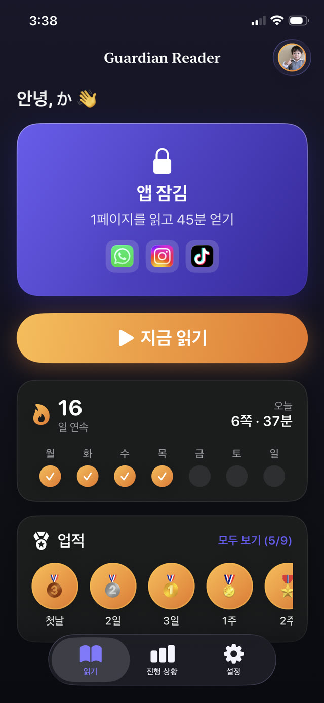
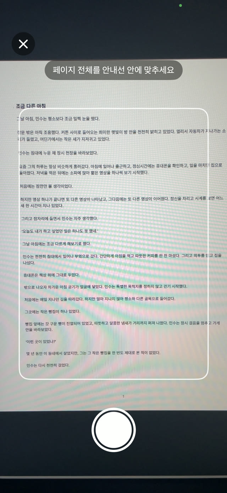
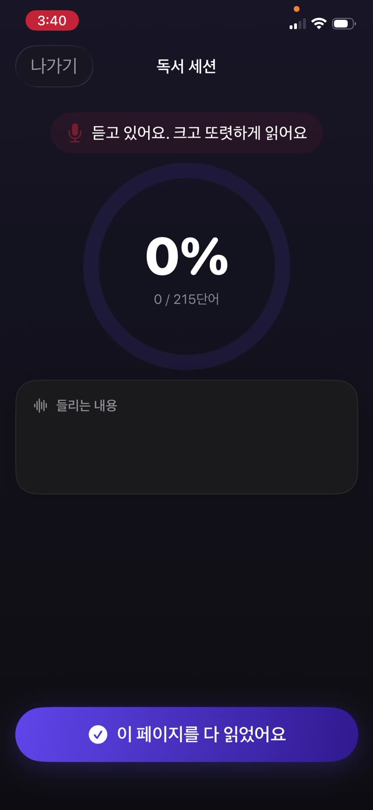
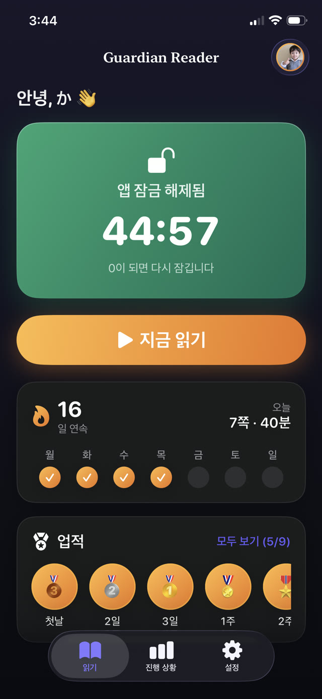
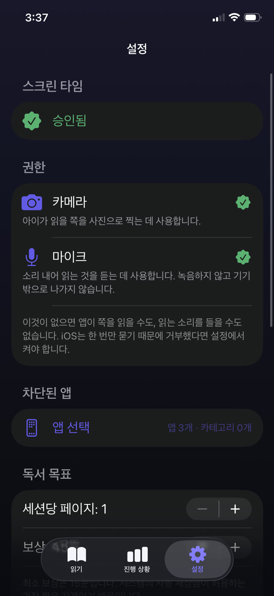
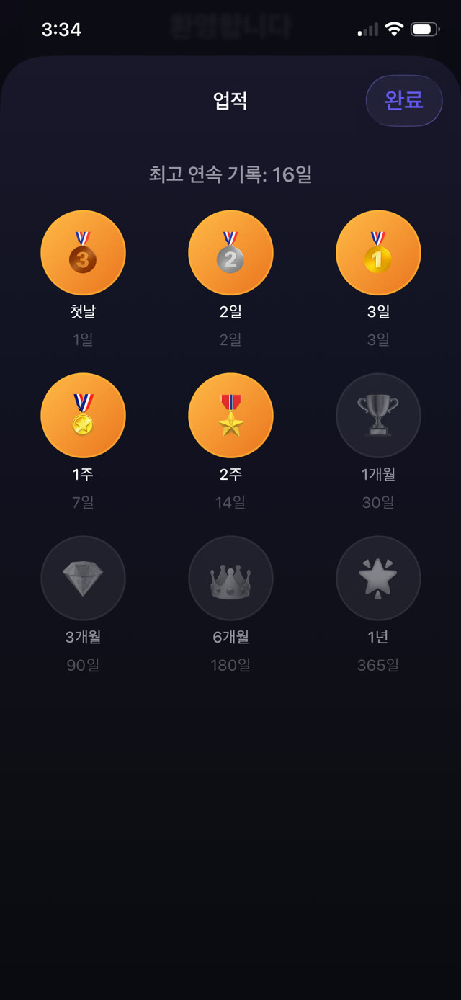
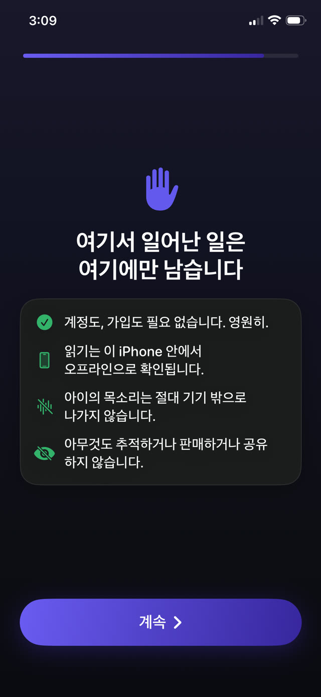

읽는 소리를 직접 듣고 확인하는 자녀 보호 앱.
Guardian Reader는 부모가 고른 앱을 잠급니다. 아이가 종이책을 소리 내어 읽으면 iPhone이 한 단어씩 확인하고, 그렇게 얻은 스크린타임이 열립니다. 부모의 의지력도, 아이의 의지력도 필요하지 않습니다.
무료 · 아이의 iPhone용, iOS 18 이상 · 계정 없음, 추적 없음 · 9개 언어


읽고 나서 놀기.
Guardian Reader는 아이와 앱 사이에 진짜 책을 놓습니다. 몇 쪽을 소리 내어 읽고 한 단어씩 확인되면 화면이 열립니다.
iPhone · iOS 18 이상 · 무료: 읽기 검증 + 앱 1개 잠금 · Premium은 7일 무료
앱 살펴보기
다 읽을 때까지 앱은 잠긴 채로.
자녀 보호와 읽기 코치가 하나로. 아이가 혼자 사용하고, 확인은 iPhone이 합니다.
실시간 검증
한 단어씩 확인하는 과정.
아이가 소리 내어 읽는 동안 앱은 들은 내용을 스캔한 쪽과 대조하고, 일치율이 실시간으로 올라갑니다. 이것은 실제 세션으로, 종이책을 iPhone에 대고 읽는 모습입니다. 정직하게 읽으면 기준을 크게 넘고, 다른 이야기를 하면 0에 가깝게 나옵니다.
소리 내어 읽기가 곧 연습입니다 →
쪽 스캔
모든 종이책이 열쇠가 됩니다.
아이가 읽을 쪽을 한 장씩 사진으로 찍고, 그다음 진짜 책처럼 이어서 읽습니다. 테두리 안의 글자만 인식되고, 같은 세션에서 이미 스캔한 쪽은 자동으로 걸러집니다.
아이가 더 많이 읽게 하려면 →
속임수는 통하지 않습니다
아이들이 실제로 쓰는 지름길을 잡아냅니다.
맞힐 수 있는 퀴즈도, 양심에 맡기는 방식도 없습니다. 말한 단어는 스캔한 바로 그 페이지와 순서대로 대조됩니다. 대충 훑기, 즉흥적으로 말하기, 다 읽었다고 하기는 통과하지 못합니다. 더듬거림과 작은 실수는 통과합니다. 읽었는지를 보지, 완벽했는지를 보지 않습니다. 통과 기준의 엄격함은 슬라이더로 정합니다.
획득형 스크린타임의 원리 →
보상
읽기 통과. 휴대폰 해제.
획득한 시간만큼 앱이 열리고 남은 시간이 보입니다. 0이 되면 스스로 다시 잠깁니다. Apple 스크린타임이 적용하므로 Guardian Reader를 닫아도 유지됩니다.
YouTube와 TikTok 제한하기 →
부모가 정하는 규칙
교환 비율은 부모가 정합니다.
들어가는 것은 쪽수, 나오는 것은 분입니다. 4~6세는 한 쪽에 약 15분, 청소년은 네 쪽까지 약 45분. 나이에 맞는 시작점이 제안되고, 모든 값은 부모용 PIN 뒤에서 바꿀 수 있습니다. 이 PIN은 기기 암호와 별개입니다.
오래가는 스크린타임 규칙 →
기록과 연속 일수
다시 돌아오게 만드는 메달.
아이에게는 연속 일수, 별, 메달. 부모에게는 하루·한 달·일 년의 쪽수. Premium은 세션별 PDF 보고서를 더합니다. 날짜, 분, 일치율, 그리고 실제로 읽은 본문까지 담겨 선생님께 그대로 드릴 수 있습니다.
학교에 내는 독서 기록 →
설계부터 비공개
아이를 향한 마이크는 스스로를 설명해야 합니다.
카메라가 쪽을 읽고 마이크가 읽는 소리를 글로 옮기는데, 둘 다 기기 안에서만 작동합니다. 계정도 서버도 분석도, 외부 SDK도 없습니다. 목소리가 iPhone 밖으로 나가지 않으며 모든 기능이 오프라인에서 작동합니다.
개인정보 처리방침 전문 보기 →How it works
네 단계. 협상할 것은 없습니다.
처음 한 번만 아이와 함께 설정하면 됩니다. 그다음부터 약속은 저절로 굴러갑니다. 경계는 부모의 목소리가 아니라 앱 안에 있습니다.
앱 잠그기
YouTube, TikTok, 게임처럼 잠글 앱이나 카테고리 전체를 고르고, 설정을 부모용 PIN으로 보호합니다.
쪽 스캔하기
아이가 읽을 진짜 책의 쪽을 한 장씩 사진으로 찍습니다.
소리 내어 읽기
이어서 읽는 동안 iPhone이 듣고, 스캔한 본문과 한 단어씩 대조합니다.
스크린타임 해제
읽기를 통과하면 앱이 열리고 획득한 시간만큼 쓸 수 있습니다. 0이 되면 스스로 잠깁니다.
Guides
어려운 지점을 위한 안내.
스크린타임, 앱 잠금, 읽기 습관에 대한 실용적인 가이드와 각 상황에서 Guardian Reader가 어떻게 돕는지.
아이가 더 많이 읽게 하는 방법
화면을 더 좋아하는 아이에게 통하는 일곱 가지 방법과, 그중 부모의 의지력이 필요 없는 한 가지.
가이드 읽기 스크린타임아이가 읽기로 스크린타임을 얻는 방법
스크린타임을 당연한 것에서 얻는 것으로 바꾸는 방법과, 감시하지 않아도 규칙이 유지되는 이유.
가이드 읽기 자녀 보호아이의 iPhone에서 앱 잠그기
Apple 스크린타임으로 되는 것과 안 되는 것, 아이들이 찾아내는 빈틈, 그리고 그것을 막는 방법.
가이드 읽기 YouTube · TikTok아이를 위한 YouTube와 TikTok 제한하기
시간 제한만으로는 끝없는 피드를 이길 수 없는 이유와, 앱 앞에 놓아야 할 것.
가이드 읽기 읽기 유창성집에서 읽기 유창성 기르기
선생님이 말하는 유창성의 뜻, 소리 내어 읽기가 연습이 되는 이유, 그리고 평범한 저녁에 10분을 넣는 방법.
가이드 읽기 가정의 규칙실제로 오래가는 스크린타임 규칙
대부분의 가정 규칙이 2주 만에 무너지는 이유와, 살아남은 규칙들이 공통으로 가진 세 가지.
가이드 읽기FAQ
자주 묻는 질문
아이가 정말 책을 읽었는지 Guardian Reader는 어떻게 확인하나요?
읽는 척해서 속일 수 있나요?
AI 음성이 아이 대신 페이지를 읽을 수 있나요?
Guardian Reader는 제 휴대폰에 설치하나요, 아이 휴대폰에 설치하나요?
아이의 iPhone에서 어떤 앱을 잠글 수 있나요?
Guardian Reader가 아이의 목소리를 녹음하나요?
어떤 책을 쓸 수 있나요?
Guardian Reader는 몇 살을 위한 앱인가요?
Guardian Reader는 얼마인가요?
학교에 낼 독서 기록을 받을 수 있나요?
인터넷 없이도 작동하나요?
아이가 앱을 지우거나 설정을 바꿀 수 있나요?
오늘 밤은 읽기가 먼저.
설정은 2분. 아이가 소리 내어 읽고 스스로 스크린타임을 얻습니다. 이제 부모가 나쁜 사람이 될 필요가 없습니다.
다운로드App Store무료 · 광고 없음, 계정 없음, 추적 없음